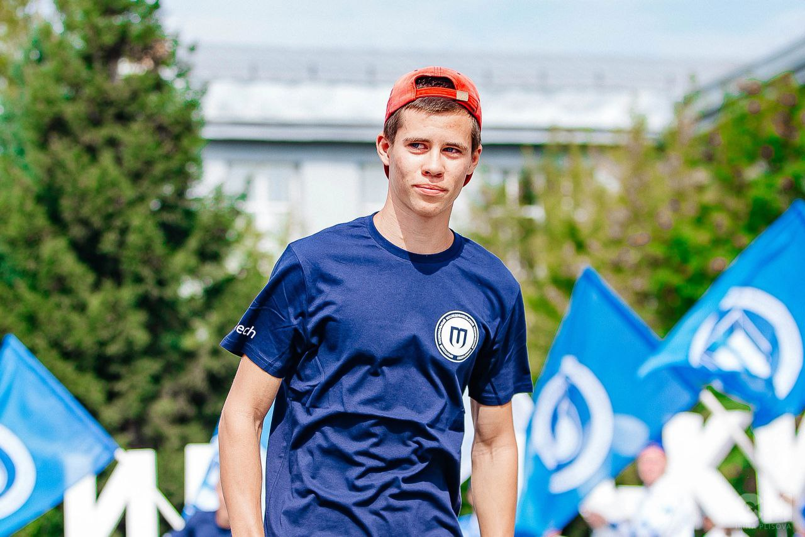
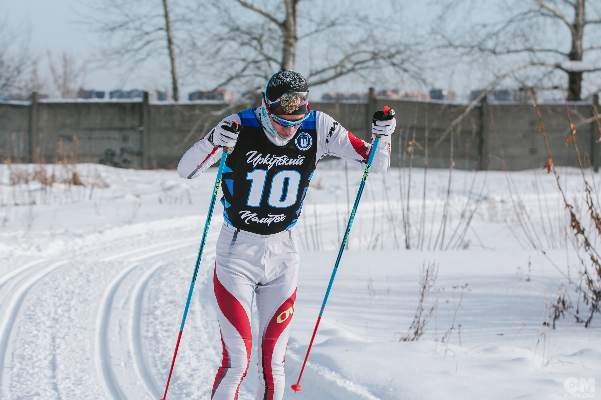
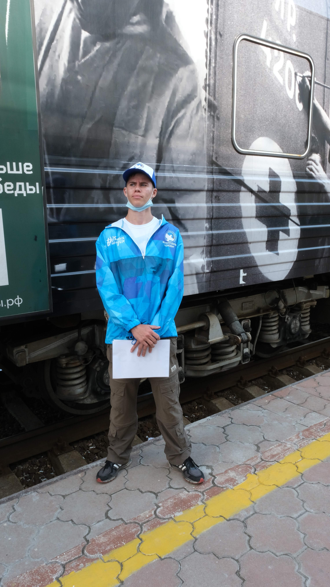

Денис Тубольцев
Обучение
Студент 2 курса Иркутского Политеха (ФГБОУ ВО ИРНИТУ)
Обучаюсь по программе бакалавриата "Вычислительные машины, комплексы системы и сети"
Спорт
Я профессионально занимаюсь лыжными гонками, имею 1 спортивный разряд
Участвую во всех видах гонок в нашей области
Выступаю на Чемпионатах Сибирского федерального округа
Участник VIII Всероссийской зимней универсиады 2024
Волонтерство
До обучения в вузе активно занимался волонтерской деятельность
Был волонтером на таких мероприятиях, как "Праздник Чистоты", "Поезд Победы", "En+ 360"
Несклько лет подряд очищал берега Байкала от мусора, сторил экотропу
Хобби

Очень люблю рыбалку, игру в хоккей, киберспорт
Хотел бы научиться играть на музыкальных инструментах, так как люблю инструментальную музыку (электрогитара, ударные)
Иногда занимаюсь web-дизайном, изучаю HTML, CSS